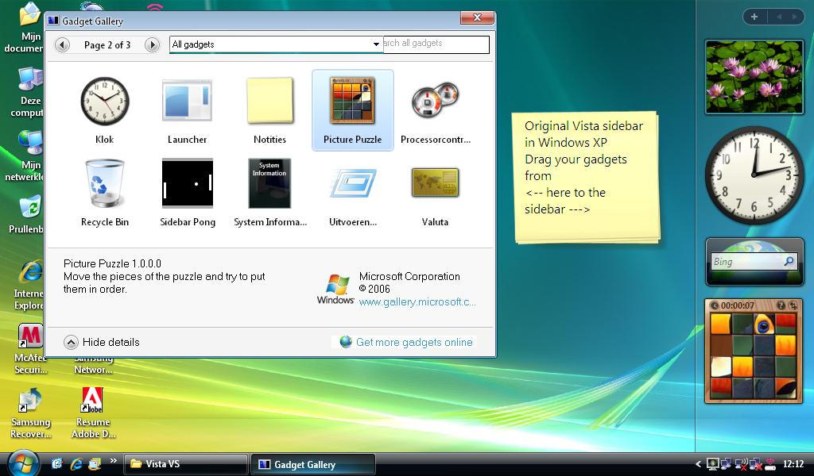
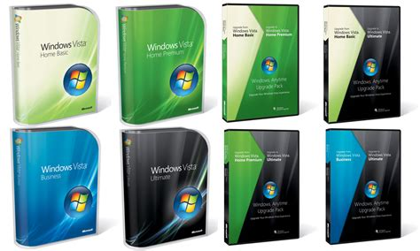

Windows Vista was officially launched by Microsoft on January 30, 2007, as the successor to Windows XP.
A major visual overhaul, Windows Vista introduced the Aero (Authentic, Energetic, Reflective, and Open) user interface. Aero featured transparent window elements, live thumbnails, and smooth animations, providing a more modern and visually appealing experience compared to its predecessor.
Windows Vista aimed to enhance system security with the implementation of User Account Control (UAC). UAC prompted users for permission before allowing certain system changes, reducing the risk of malware and unauthorized modifications.
he operating system introduced the Windows Sidebar, a vertical bar on the desktop that hosted mini-applications known as gadgets. These gadgets offered at-a-glance information, such as weather updates, news, or system performance data, enhancing user customization. Windows Vista improved file management with the introduction of Instant Search. This feature made it quicker and more efficient for users to find files and applications. Additionally, Vista implemented a metadata-based file organization system, making file searching and sorting more intuitive. The networking capabilities of Windows Vista were enhanced with a redesigned Network Center. This made it easier for users to manage and set up network connections. The introduction of HomeGroups simplified file and printer sharing on home networks. Despite its new features, Windows Vista faced criticism for its relatively high system requirements and perceived performance issues. Some users found it to be resource-intensive, especially on hardware that was considered sufficient for its predecessor, Windows XP.
Windows Vista was released in multiple editions to cater to different user needs and scenarios. The editions included Home Basic, Home Premium, Business, Enterprise, and Ultimate, offering various features and capabilities tailored to specific user requirements.
